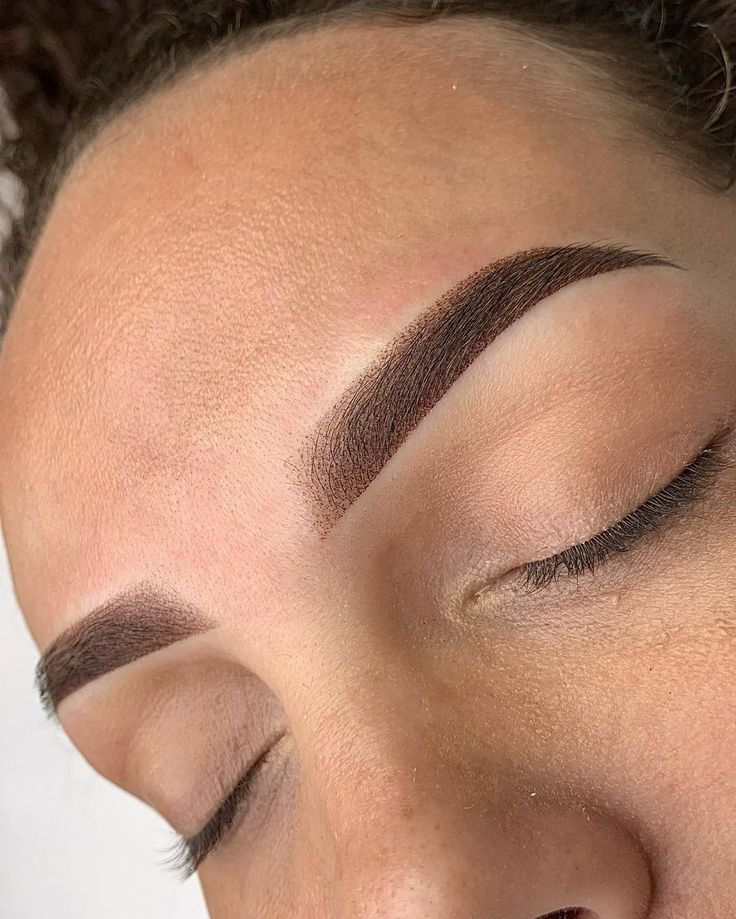
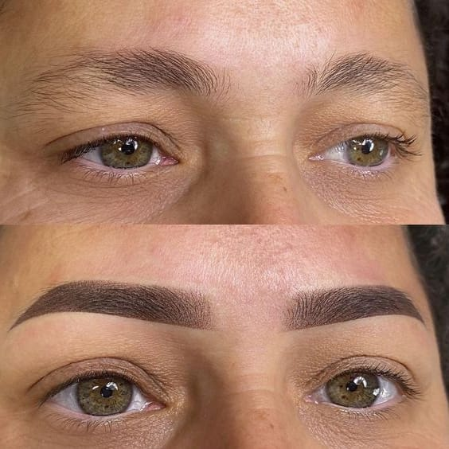
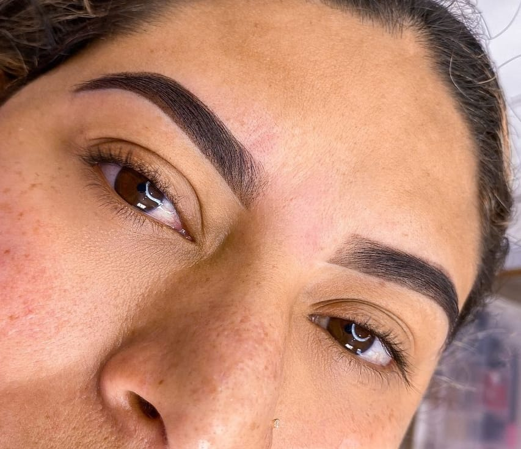
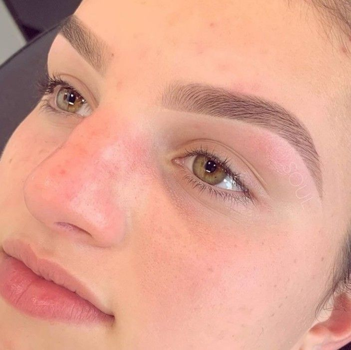
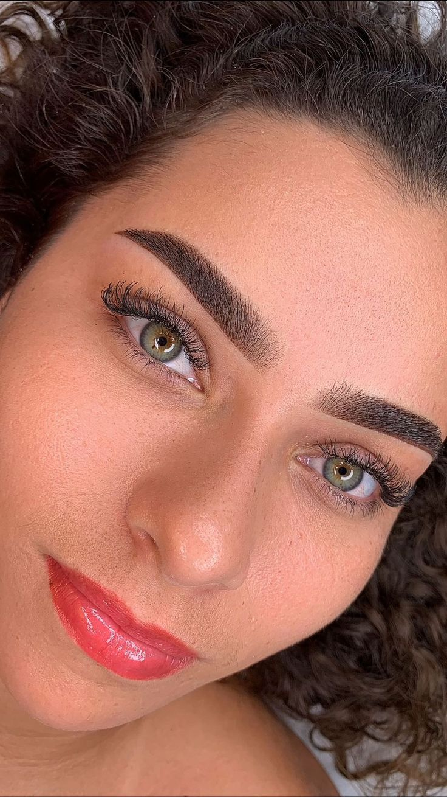

Ariane Duarte, especialista em Sobrancelhas e apaixonada pelo universo da estética.
Encontrei nas Sobrancelhas uma forma de cuidar, transformar e realçar a beleza natural de cada um, fio a fio, com leveza e delicadeza.
Minha missão é entregar um olhar mais confiante, harmonioso e único, sempre com muito carinho e dedicação.
Nossos procedimentos são personalizados, respeitando o que você tem de mais lindo, sua essência e características únicas.
Micropigmentação Shadow
A técnica Shadow proporciona sobrancelhas preenchidas, efeito degradê e acabamento esfumado. Ideal para quem busca definição suave, harmonia facial e praticidade no dia a dia.






Sobre a Micropigmentação Shadow
A micropigmentação Shadow é uma técnica moderna que cria um sombreamento suave e esfumado nas sobrancelhas, garantindo aquele efeito de maquiagem natural e bem acabada todos os dias.
Perfeita para corrigir falhas e dar mais volume ao olhar, ela oferece um resultado mais preenchido e harmonioso que o fio a fio tradicional, sem perder a leveza.
O procedimento pode ser feito sozinho, para um visual elegante e uniforme, ou combinado com o desenho de fios, no estilo Shadow Line, que une o melhor das duas técnicas para um acabamento ainda mais realista e sofisticado.
Praticidade e durabilidade: a liberdade que você precisa
A Micropigmentação de Sobrencelhas Shadow tem durabilidade de 18 a 24 meses, oferecendo uma solução de baixa manutenção para a sua rotina de beleza. Durante esse período, suas sobrancelhas permanecerão impecáveis, prontas para qualquer ocasião. É o investimento ideal para quem busca otimizar o tempo e ter a confiança de um olhar sempre bem cuidado.
Para quem é indicado?
- Pessoas com sobrancelhas ralas, falhadas ou com pouca definição.
- Quem busca um olhar marcante, com sobrancelhas bem preenchidas e definidas.
- Para quem deseja praticidade no dia a dia, acordando já com o visual perfeito.
- Para quem busca um olhar mais jovem e expressivo.
Principais Benefícios da Micropigmentação Shadow
- Sobrancelhas mais definidas e preenchidas.
- Efeito esfumado, com preenchimento impecável.
- Substitui o uso de maquiagem diária.
- Corrige falhas e assimetrias de forma delicada.
- Autoestima elevada com um visual sofisticado e moderno.
O que nossos clientes dizem
Cristiane L
★★★★★
"Ótimo resultado. Atendimento profissional. Ficou perfeito! Recomendo!"
Nina Kolos
★★★★★
"Profissional excepcional! Fiquei encantada com o resultado e recomendo de olhos fechados!"
Cristiane Mariano
★★★★★
"Adorei. Minhas sobrancelhas tinham o final ralo e agora estão com formato bem definido. Lugar organizado e pontual no horário de atendimento."
Fabio Costa
★★★★★
"Simplesmente amei o resultado! Dá pra ver o carinho e o cuidado da profissional em cada detalhe. Muito atenciosa e dedicada. Super recomendo!"
Joice Araújo Ferreira
★★★★★
"Ótima profissional, trabalho excelente, super indico. Além de ser uma profissional de excelência, também é receptiva e muito atenciosa."
Izabela Ramalho
★★★★★
"Profissional incrível e atendimento excelente! Superou todas as minhas expectativas!"